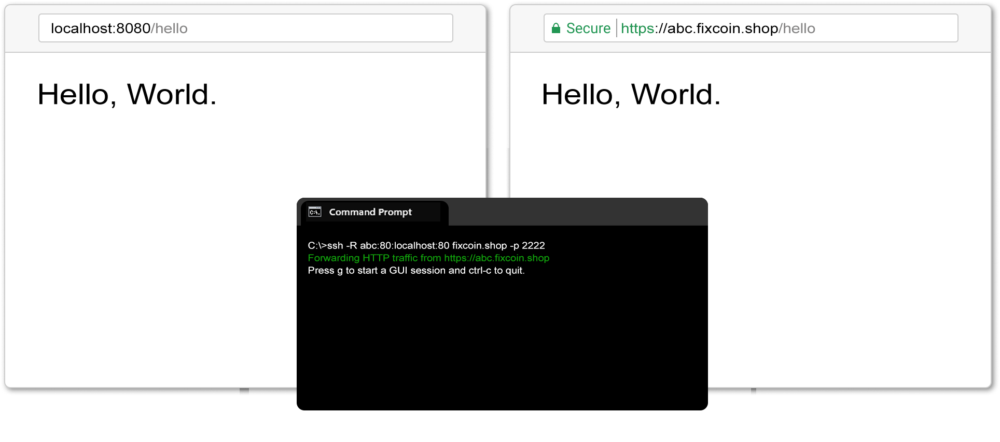

Please Donate
We can keep this server alive please you too can help in keeping this work forever the Hosted inspire me.
Thank you so much!
Subscribe
Hosted gets better all the time. Leave your email address or follow me on Twitter to get notified of improvements. (Expect about one or two emails per month.)
How it work?
Hosted is an SSH server just for remote port forwarding. When a user connects to Hosted, they get a public URL that anybody can use to connect to their localhost server.
Manual
Basic use
ssh -R 80:localhost:8080 hosted.us
The -R option instructs your SSH client to request port forwarding from the server and proxy requests to the specified host and port (usually localhost). A subdomain of hosted.us will be assigned to forward HTTP traffic.
Request multiple tunnels at once
ssh -R 80:localhost:8888 -R 80:localhost:9999 hosted.us
The target server doesn't have to be on localhost
ssh -R 80:example.com:80 hosted.us
Request a particular subdomain
The subdomain is chosen deterministically based on your IP address, the provided SSH username, and subdomain availability, so you'll often get the same subdomain between restarts. You can also request a particular subdomain:
ssh -R incubo:80:localhost:8888 hosted.us
ssh -R incubo.hosted.us:80:localhost:8888 hosted.us
Change the SSH username to get assigned a different subdomain:
ssh -R 80:localhost:8888 foo@hosted.us
ssh -R 80:localhost:8888 -l foo hosted.us
Private TCP and SSH forwarding
Hosted can be used to route private TCP traffic, almost like a lightweight VPN. To set up the tunnel, specify an alias as the hostname and some port:
ssh -R myalias:5901:localhost:5900 hosted.us
Then to connect to that port from another machine, use ssh -L:
ssh -L 5902:myalias:5901 hosted.us
Then connect to localhost:5902 on the remote machine, and SSH will send traffic through Hosted, which will forward it to the target machine, ultimately connecting you to port 5900 on the target machine.
If you're using this to connect to an SSH server, then you can use OpenSSH's JumpHost feature. On the target machine, you might start the tunnel like this:
ssh -R myalias:22:localhost:22 hosted.us
Then you can establish an SSH connection using hosted.us as an intermediary like this:
ssh -J hosted.us user@myalias
The -J option was introduced in the OpenSSH client version 7.3. If you have an older client, you can use the ProxyCommand option instead:
ssh -o ProxyCommand="ssh -W myalias:22 hosted.us" user@myalias
Public TCP forwarding
If you request a port other than 80 or 443, raw TCP traffic will be forwarded. (In this case, there's no way to route connections based on hostname, and the host, if specified, will trigger private TCP forwarding.)
ssh -R 1492:localhost:1492 hosted.us
If port 0 is requested, a random TCP port will be forwarded:
ssh -R 0:localhost:1492 hosted.us
Connect on port 443
In some environments, outbound port 22 connections are blocked. For this reason, you can also connect on port 443.
ssh -p 443 -R 80:localhost:8888 hosted.us
Automatically reconnect
Use autossh for more persistent tunnels. Use "-M 0" to disable autossh's connectivity checking:
autossh -M 0 -R 80:localhost:8888 hosted.us
See https://www.everythingcli.org/ssh-tunnelling-for-fun-and-profit-autossh/ for more about autossh.
Custom Domain
To use your own domain or subdomain, you'll first need an SSH key pair. Use the ssh-keygen program to generate a key pair if you don't already have one.
Next, use ssh-keygen -l and note your key's fingerprint. Here's an example output:
2048 SHA256:pmc7ZRv7ymCmghUwHoJWEm5ToSTd33ryeDeps5RnfRY no comment (RSA)
In this example, the fingerprint is SHA256:pmc7ZRv7ymCmghUwHoJWEm5ToSTd33ryeDeps5RnfRY.
Now you need to add two DNS records for the domain or subdomain you'd like to use:
- A CNAME record pointing to hosted.us.
- For each SSH key to allow, a TXT record at _Hosted-authkey.[domain] = [fingerprint].
Once your DNS records are in place, you can request your subdomain/domain from Hosted:
ssh -R subdomain.example.com:80:localhost:3000 hosted.us
When you request port forwarding for subdomain.example.com, Hosted will fetch the TXT records from your DNS server and only allow forwarding if you've provided a public key with the same fingerprint as specified in TXT records.
Alternatives
ngrok
Hosted is an excellent alternative to ngrok. Hosted was inspired by ngrok and attempts to serve many of the same purposes. The primary advantage of Hosted over ngrok is the use of your existing SSH client, so there's no client application to install.
Other slight advantages include preservation of URLs across reconnect for free (ngrok allows this only for paid accounts) and in-terminal request inspection and replay (ngrok uses a web interface).
OpenSSH Server
Using Hosted instead of OpenSSH frees you from having to configure and maintain a server. It also handles HTTPS and subdomain generation, two features that complicate a typical SSH port-forwarding setup.
If Hosted doesn't meet your needs, this guide has some ideas for setting up OpenSSH.
Host it yourself
This free version is intended for evaluative and personal use and allows no more than 3 total simultaneous tunnels per instance.
Email me at hosted@hosted.us if you're interested in licensing Hosted for business use or otherwise need more than 3 tunnels at a time.
Download
Linux
Mac
Windows
Use
The server's behavior is configured using command line arguments. Use -h to see all options.
./Hosted -h
-private_key_path
At the very least, you must specify the path to an encoded private key used for establishing SSH connections. You may be able to use /etc/ssh/ssh_host_rsa_key or $HOME/.ssh/id_rsa, but it's recommended that you generate a private key for Hosted's use (using ssh-keygen, for example: ssh-keygen -t rsa -f ssh_host_rsa_key).
./Hosted -private_key_path=/etc/ssh/ssh_host_rsa_key
./Hosted -private_key_path=$HOME/.ssh/id_rsa
-port, -http_port, -https_port
These options tell Hosted on which ports, respectively, to listen for SSH, HTTP, and HTTPS connections.
./Hosted -private_key_path=ssh_host_rsa_key -port=22 -http_port=80 -https_port=443
./Hosted -private_key_path=ssh_host_rsa_key -port=2222 -http_port=8080 -https_port=8443
-cert_dir
This is necessary for HTTPS support. The directory it specifies should contain TLS certificates and keys. For example, a cert_dir might contain the following files:
abc.crt abc.key foo.crt foo.key
Certificate files must end in .crt, and keys in .key. The basename for certificate files doesn't matter, but must match the corresponding key file (i.e. abc.{crt,key} should both exist). Wildcard certificates and certificates with multiple DNS names are supported.
./Hosted -cert_dir=certs
-domain
This option specifies the default domain in case no domain is specified.
./Hosted -domain=example.com
-disable_telemetry
A few basic events are reported for my analytical use (process startup and the start of port forwarding). Invoke this flag to disable telemetry.